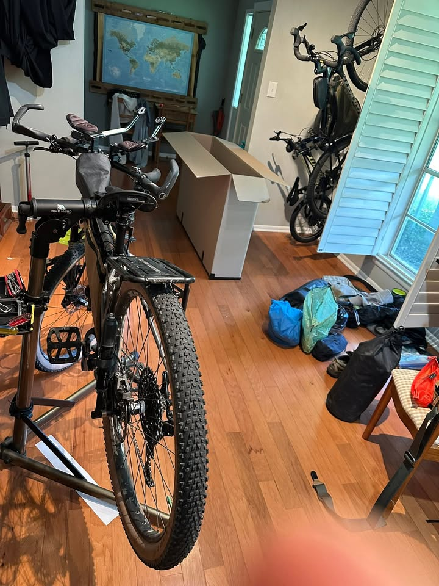
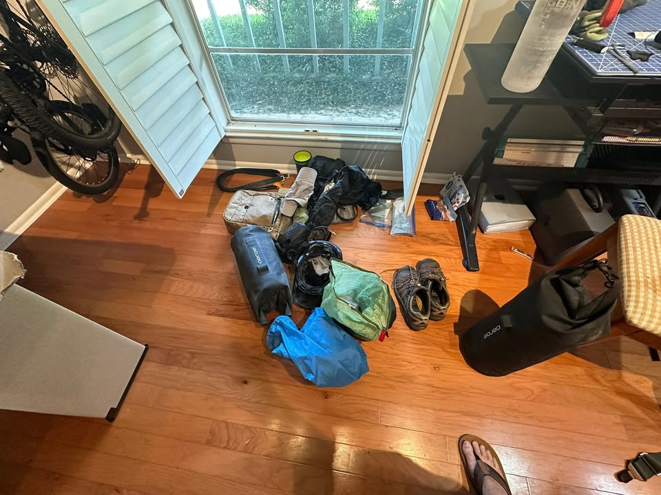

Adventure awaits!!!

From the Journey
For those who have never done it, boxing up a bike to put it on a plane can seem a bit daunting. It definitely was for me, especially since this is only my second time doing it. As I removed critical screws and parts, I hoped not to lose track of any of the tiny pieces that are absolutely essential for a functioning bike once I reach my destination.
Luckily, as a kid, I played Tetris, although fitting two big bike wheels into this box was a bit of a challenge.

From the Journey
After about two hours of taking pieces apart and fitting them together like a puzzle that didn’t come with a picture, I finally got everything boxed up and ready to go. I placed my clothes and carry-on baggage next to the box so nothing would get lost.
Although I felt a surge of excitement and anticipation the first time I attempted this trip, I don’t have that same feeling yet. It hasn’t quite hit me that I’m leaving on a plane tomorrow and won’t see home for a month and a half to two.

From the Journey